This package contains basic components 1D mechanical translational drive trains.
| Name | Description |
|---|---|
| Fixed flange | |
| Sliding mass with inertia | |
| Rod without inertia | |
| Linear 1D translational spring | |
| Linear 1D translational damper | |
| SpringDamper | Linear 1D translational spring and damper in parallel |
| 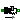 ElastoGap | 1D translational spring damper combination with gap |
| Coulomb friction in support | |
| 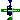 Brake | Brake basend on Coulomb friction |
| Gearbox transforming rotational into translational motion" | |
| Simple 1-dim. model of an ideal rolling wheel without inertia | |
| Initializes a flange with pre-defined position, speed and acceleration (usually, this is reference data from a control bus) | |
| Sliding mass with hard stop and Stribeck friction | |
| 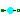 RelativeStates | Definition of relative state variables |
 Modelica.Mechanics.Translational.Components.Fixed
Modelica.Mechanics.Translational.Components.Fixed

The flange of a 1D translational mechanical system fixed at an position s0 in the housing. May be used:
| Type | Name | Default | Description |
|---|---|---|---|
| Position | s0 | 0 | fixed offset position of housing [m] |
| Type | Name | Description |
|---|---|---|
| Flange_b | flange |
model Fixed "Fixed flange" parameter SI.Position s0=0 "fixed offset position of housing"; Interfaces.Flange_b flange; equation flange.s = s0; end Fixed;
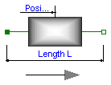
Sliding mass with inertia, without friction and two rigidly connected flanges.
The sliding mass has the length L, the position coordinate s is in the middle. Sign convention: A positive force at flange flange_a moves the sliding mass in the positive direction. A negative force at flange flange_a moves the sliding mass to the negative direction.
| Type | Name | Default | Description |
|---|---|---|---|
| Mass | m | mass of the sliding mass [kg] | |
| Length | L | 0 | Length of component, from left flange to right flange (= flange_b.s - flange_a.s) [m] |
| Advanced | |||
| StateSelect | stateSelect | StateSelect.default | Priority to use s and v as states |
| Type | Name | Description |
|---|---|---|
| Flange_a | flange_a | Left flange of translational component |
| Flange_b | flange_b | Right flange of translational component |
model Mass "Sliding mass with inertia"
parameter SI.Mass m(min=0, start=1) "mass of the sliding mass";
parameter StateSelect stateSelect=StateSelect.default
"Priority to use s and v as states";
extends Translational.Interfaces.PartialRigid(L=0,s(start=0, stateSelect=stateSelect));
SI.Velocity v(start=0, stateSelect=stateSelect)
"absolute velocity of component";
SI.Acceleration a(start=0) "absolute acceleration of component";
equation
v = der(s);
a = der(v);
m*a = flange_a.f + flange_b.f;
end Mass;

Rod without inertia and two rigidly connected flanges.
| Type | Name | Default | Description |
|---|---|---|---|
| Length | L | Length of component, from left flange to right flange (= flange_b.s - flange_a.s) [m] |
| Type | Name | Description |
|---|---|---|
| Flange_a | flange_a | Left flange of translational component |
| Flange_b | flange_b | Right flange of translational component |
model Rod "Rod without inertia" extends Translational.Interfaces.PartialRigid; equation 0 = flange_a.f + flange_b.f; end Rod;
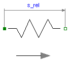
A linear 1D translational spring. The component can be connected either between two sliding masses, or between a sliding mass and the housing (model Fixed), to describe a coupling of the sliding mass with the housing via a spring.
| Type | Name | Default | Description |
|---|---|---|---|
| TranslationalSpringConstant | c | spring constant [N/m] | |
| Distance | s_rel0 | 0 | unstretched spring length [m] |
| Initialization | |||
| Distance | s_rel.start | 0 | relative distance (= flange_b.s - flange_a.s) [m] |
| Type | Name | Description |
|---|---|---|
| Flange_a | flange_a | Left flange of compliant 1-dim. translational component |
| Flange_b | flange_b | Right flange of compliant 1-dim. translational component |
model Spring "Linear 1D translational spring"
extends Translational.Interfaces.PartialCompliant;
parameter SI.TranslationalSpringConstant c(final min=0, start = 1)
"spring constant ";
parameter SI.Distance s_rel0=0 "unstretched spring length";
equation
f = c*(s_rel - s_rel0);
end Spring;
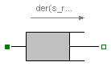
Linear, velocity dependent damper element. It can be either connected between a sliding mass and the housing (model Fixed), or between two sliding masses.
| Type | Name | Default | Description |
|---|---|---|---|
| TranslationalDampingConstant | d | damping constant [N.s/m] | |
| Initialization | |||
| Distance | s_rel.start | 0 | Relative distance (= flange_b.s - flange_a.s) [m] |
| Velocity | v_rel.start | 0 | Relative velocity (= der(s_rel)) [m/s] |
| Advanced | |||
| StateSelect | stateSelect | StateSelect.prefer | Priority to use phi_rel and w_rel as states |
| Distance | s_nominal | 1e-4 | Nominal value of s_rel (used for scaling) [m] |
| Type | Name | Description |
|---|---|---|
| Flange_a | flange_a | Left flange of compliant 1-dim. translational component |
| Flange_b | flange_b | Right flange of compliant 1-dim. transational component |
model Damper "Linear 1D translational damper"
extends Translational.Interfaces.PartialCompliantWithRelativeStates;
parameter SI.TranslationalDampingConstant d(final min=0, start = 0)
"damping constant";
equation
f = d*v_rel;
end Damper;
 Modelica.Mechanics.Translational.Components.SpringDamper
Modelica.Mechanics.Translational.Components.SpringDamper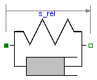
A spring and damper element connected in parallel. The component can be connected either between two sliding masses to describe the elasticity and damping, or between a sliding mass and the housing (model Fixed), to describe a coupling of the sliding mass with the housing via a spring/damper.
| Type | Name | Default | Description |
|---|---|---|---|
| TranslationalSpringConstant | c | spring constant [N/m] | |
| TranslationalDampingConstant | d | damping constant [N.s/m] | |
| Position | s_rel0 | 0 | unstretched spring length [m] |
| Initialization | |||
| Distance | s_rel.start | 0 | Relative distance (= flange_b.s - flange_a.s) [m] |
| Velocity | v_rel.start | 0 | Relative velocity (= der(s_rel)) [m/s] |
| Advanced | |||
| StateSelect | stateSelect | StateSelect.prefer | Priority to use phi_rel and w_rel as states |
| Distance | s_nominal | 1e-4 | Nominal value of s_rel (used for scaling) [m] |
| Type | Name | Description |
|---|---|---|
| Flange_a | flange_a | Left flange of compliant 1-dim. translational component |
| Flange_b | flange_b | Right flange of compliant 1-dim. transational component |
model SpringDamper
"Linear 1D translational spring and damper in parallel"
extends Translational.Interfaces.PartialCompliantWithRelativeStates;
parameter SI.TranslationalSpringConstant c(final min=0, start = 1)
"spring constant";
parameter SI.TranslationalDampingConstant d(final min=0, start = 1)
"damping constant";
parameter SI.Position s_rel0=0 "unstretched spring length";
equation
f = c*(s_rel - s_rel0) + d*v_rel;
end SpringDamper;
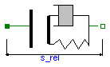
A linear spring damper combination that can lift off. The component can be connected between a sliding mass and the housing (model Fixed), to describe the contact of a sliding mass with the housing.
As long as s_rel > s_rel0, no force is exerted (s_rel = flange_b.s - flange_a.s). If s_rel ≤ s_rel0, the contact force is basically computed with a linear spring/damper characteristic:
desiredContactForce = c*(s_rel - s_rel0) + d*der(s_rel)This force law leads to the following difficulties:
In the literature there are several proposals to fix problem (2). However, there seems to be no proposal to avoid sticking. For this reason, the most simple approach is used in the ElastoGap model, to fix both problems by slight changes to the linear spring/damper characteristic:
if s_rel > s_rel0 then
f_c = 0; // spring force
f_d = 0; // damper force
flange_b.f = 0;
else
f_c = c*(s_rel - s_rel0); // spring force
f_d = d*der(s_rel); // damper force
flange_b.f = if f_c + f_d ≥ 0 then 0 else f_c + max( f_c, f_d );
end if;
Note, when sticking would occur (f_c + f_d ≥ 0), then the contact force is explicitly set to zero. The "max(f_c, f_d)" part in the if-expression, limits the damping force when it is pushing. This means that at the start of the contact (s_rel = s_rel0), the damping force is zero and is continuous. The effect of both modifications is that the absolute value of the damping force is always limited by the absolute value of the spring force: |f_d| ≤ |f_c|.
In the next figure, a typical simulation with the ElastoGap model is shown (Examples.ElastoGap) where the different effects are visualized:

| Type | Name | Default | Description |
|---|---|---|---|
| TranslationalSpringConstant | c | Spring constant [N/m] | |
| TranslationalDampingConstant | d | Damping constant [N.s/m] | |
| Position | s_rel0 | 0 | Unstretched spring length [m] |
| Initialization | |||
| Distance | s_rel.start | 0 | Relative distance (= flange_b.s - flange_a.s) [m] |
| Velocity | v_rel.start | 0 | Relative velocity (= der(s_rel)) [m/s] |
| Advanced | |||
| StateSelect | stateSelect | StateSelect.prefer | Priority to use phi_rel and w_rel as states |
| Distance | s_nominal | 1e-4 | Nominal value of s_rel (used for scaling) [m] |
| Type | Name | Description |
|---|---|---|
| Flange_a | flange_a | Left flange of compliant 1-dim. translational component |
| Flange_b | flange_b | Right flange of compliant 1-dim. transational component |
model ElastoGap "1D translational spring damper combination with gap"
extends Translational.Interfaces.PartialCompliantWithRelativeStates;
parameter SI.TranslationalSpringConstant c(final min=0, start = 1)
"Spring constant";
parameter SI.TranslationalDampingConstant d(final min=0, start = 1)
"Damping constant";
parameter SI.Position s_rel0=0 "Unstretched spring length";
/*
Please note that initialization might fail due to the nonlinear spring characteristic
(spring force is zero for s_rel > s_rel0)
if a positive force is acting on the element and no other force balances this force
(e.g. when setting both initial velocity and acceleration to 0)
*/
protected
SI.Force f_c "Spring force";
SI.Force f_d "Unmodified damping force";
equation
// Modify contact force, so that it is only "pushing" and not
// "pulling/sticking" and that it is continous near lift off
if s_rel > s_rel0 then
f_c = 0;
f_d = 0;
f = 0;
else
f_c = c*(s_rel - s_rel0);
f_d = d*v_rel;
f = smooth(0, noEvent(if (f_c + f_d) >= 0 then 0 else f_c + max(f_c, f_d)));
end if;
end ElastoGap;
 Modelica.Mechanics.Translational.Components.SupportFriction
Modelica.Mechanics.Translational.Components.SupportFriction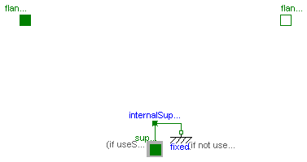
This element describes Coulomb friction in support, i.e., a frictional force acting between a flange and the housing. The positive sliding friction force "f" has to be defined by table "f_pos" as function of the absolute velocity "v". E.g.
v | f
---+-----
0 | 0
1 | 2
2 | 5
3 | 8
gives the following table:
f_pos = [0, 0; 1, 2; 2, 5; 3, 8];
Currently, only linear interpolation in the table is supported. Outside of the table, extrapolation through the last two table entries is used. It is assumed that the negative sliding friction force has the same characteristic with negative values. Friction is modelled in the following way:
When the absolute velocity "v" is not zero, the friction force is a function of v and of a constant normal force. This dependency is defined via table f_pos and can be determined by measurements, e.g. by driving the gear with constant velocity and measuring the needed driving force (= friction force).
When the absolute velocity becomes zero, the elements connected by the friction element become stuck, i.e., the absolute position remains constant. In this phase the friction force is calculated from a force balance due to the requirement, that the absolute acceleration shall be zero. The elements begin to slide when the friction force exceeds a threshold value, called the maximum static friction force, computed via:
maximum_static_friction = peak * sliding_friction(v=0) (peak >= 1)
This procedure is implemented in a "clean" way by state events and leads to continuous/discrete systems of equations if friction elements are dynamically coupled which have to be solved by appropriate numerical methods. The method is described in:
More precise friction models take into account the elasticity of the material when the two elements are "stuck", as well as other effects, like hysteresis. This has the advantage that the friction element can be completely described by a differential equation without events. The drawback is that the system becomes stiff (about 10-20 times slower simulation) and that more material constants have to be supplied which requires more sophisticated identification. For more details, see the following references, especially (Armstrong and Canudas de Witt 1996):
| Type | Name | Default | Description |
|---|---|---|---|
| Boolean | useSupport | false | = true, if support flange enabled, otherwise implicitly grounded |
| Real | f_pos[:, 2] | [0, 1] | [v, f] Positive sliding friction characteristic (v>=0) |
| Real | peak | 1 | peak*f_pos[1,2] = Maximum friction force for v==0 |
| Initialization | |||
| Boolean | startForward.start | false | true, if v_rel=0 and start of forward sliding |
| Boolean | startBackward.start | false | true, if v_rel=0 and start of backward sliding |
| Boolean | locked.start | false | true, if v_rel=0 and not sliding |
| Advanced | |||
| Velocity | v_small | 1e-3 | Relative velocity near to zero (see model info text) [m/s] |
| Type | Name | Description |
|---|---|---|
| Flange_a | flange_a | Flange of left shaft |
| Flange_b | flange_b | Flange of right shaft |
| Support | support | Support/housing of component |
model SupportFriction "Coulomb friction in support"
extends Modelica.Mechanics.Translational.Interfaces.PartialElementaryTwoFlangesAndSupport;
parameter Real f_pos[:, 2]=[0, 1]
"[v, f] Positive sliding friction characteristic (v>=0)";
parameter Real peak(final min=1) = 1
"peak*f_pos[1,2] = Maximum friction force for v==0";
extends Translational.Interfaces.PartialFriction;
SI.Position s;
SI.Velocity v "Absolute velocity of flange_a and flange_b";
SI.Acceleration a "Absolute acceleration of flange_a and flange_b";
equation
// Constant auxiliary variables
f0 = Modelica.Math.tempInterpol1(0, f_pos, 2);
f0_max = peak*f0;
free = false;
s = s_a;
s = s_b;
// velocity and acceleration of flanges
v = der(s);
a = der(v);
v_relfric = v;
a_relfric = a;
// Friction force
flange_a.f + flange_b.f + f = 0;
// Friction force
f = if locked then sa*unitForce else
(if startForward then Modelica.Math.tempInterpol1( v, f_pos, 2) else
if startBackward then -Modelica.Math.tempInterpol1(-v, f_pos, 2) else
if pre(mode) == Forward then Modelica.Math.tempInterpol1( v, f_pos, 2) else
-Modelica.Math.tempInterpol1(-v, f_pos, 2));
end SupportFriction;
 Modelica.Mechanics.Translational.Components.Brake
Modelica.Mechanics.Translational.Components.Brake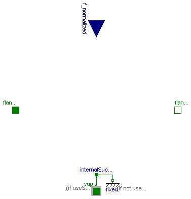
This component models a brake, i.e., a component where a frictional force is acting between the housing and a flange and a controlled normal force presses the flange to the housing in order to increase friction. The normal force fn has to be provided as input signal f_normalized in a normalized form (0 ≤ f_normalized ≤ 1), fn = fn_max*f_normalized, where fn_max has to be provided as parameter. Friction in the brake is modelled in the following way:
When the absolute velocity "v" is not zero, the friction force is a function of the velocity dependent friction coefficient mue(v) , of the normal force "fn", and of a geometry constant "cgeo" which takes into account the geometry of the device and the assumptions on the friction distributions:
frictional_force = cgeo * mue(v) * fn
Typical values of coefficients of friction:
dry operation : mue = 0.2 .. 0.4
operating in oil: mue = 0.05 .. 0.1
The positive part of the friction characteristic mue(v), v >= 0, is defined via table mue_pos (first column = v, second column = mue). Currently, only linear interpolation in the table is supported.
When the absolute velocity becomes zero, the elements connected by the friction element become stuck, i.e., the absolute position remains constant. In this phase the friction force is calculated from a force balance due to the requirement, that the absolute acceleration shall be zero. The elements begin to slide when the friction force exceeds a threshold value, called the maximum static friction force, computed via:
frictional_force = peak * cgeo * mue(w=0) * fn (peak >= 1)
This procedure is implemented in a "clean" way by state events and leads to continuous/discrete systems of equations if friction elements are dynamically coupled. The method is described in:
More precise friction models take into account the elasticity of the material when the two elements are "stuck", as well as other effects, like hysteresis. This has the advantage that the friction element can be completely described by a differential equation without events. The drawback is that the system becomes stiff (about 10-20 times slower simulation) and that more material constants have to be supplied which requires more sophisticated identification. For more details, see the following references, especially (Armstrong and Canudas de Witt 1996):
| Type | Name | Default | Description |
|---|---|---|---|
| Boolean | useSupport | false | = true, if support flange enabled, otherwise implicitly grounded |
| Real | mue_pos[:, 2] | [0, 0.5] | [v, f] Positive sliding friction characteristic (v>=0) |
| Real | peak | 1 | peak*mue_pos[1,2] = Maximum friction force for v==0 |
| Real | cgeo | 1 | Geometry constant containing friction distribution assumption |
| Force | fn_max | Maximum normal force [N] | |
| Initialization | |||
| Boolean | startForward.start | false | true, if v_rel=0 and start of forward sliding |
| Boolean | startBackward.start | false | true, if v_rel=0 and start of backward sliding |
| Boolean | locked.start | false | true, if v_rel=0 and not sliding |
| Advanced | |||
| Velocity | v_small | 1e-3 | Relative velocity near to zero (see model info text) [m/s] |
| Type | Name | Description |
|---|---|---|
| Flange_a | flange_a | Flange of left shaft |
| Flange_b | flange_b | Flange of right shaft |
| Support | support | Support/housing of component |
| input RealInput | f_normalized | Normalized force signal 0..1 (normal force = fn_max*f_normalized; brake is active if > 0) |
model Brake "Brake basend on Coulomb friction"
extends Modelica.Mechanics.Translational.Interfaces.PartialElementaryTwoFlangesAndSupport;
parameter Real mue_pos[:, 2]=[0, 0.5]
"[v, f] Positive sliding friction characteristic (v>=0)";
parameter Real peak(final min=1) = 1
"peak*mue_pos[1,2] = Maximum friction force for v==0";
parameter Real cgeo(final min=0) = 1
"Geometry constant containing friction distribution assumption";
parameter SI.Force fn_max(final min=0, start=1) "Maximum normal force";
extends Translational.Interfaces.PartialFriction;
SI.Position s;
SI.Velocity v "Absolute velocity of flange_a and flange_b";
SI.Acceleration a "Absolute acceleration of flange_a and flange_b";
Real mue0 "Friction coefficient for v=0 and forward sliding";
SI.Force fn "Normal force (=fn_max*f_normalized)";
// Constant auxiliary variable
Modelica.Blocks.Interfaces.RealInput f_normalized
"Normalized force signal 0..1 (normal force = fn_max*f_normalized; brake is active if > 0)";
equation
mue0 = Modelica.Math.tempInterpol1(0, mue_pos, 2);
s = s_a;
s = s_b;
// velocity and acceleration of flanges flange_a and flange_b
v = der(s);
a = der(v);
v_relfric = v;
a_relfric = a;
// Friction force, normal force and friction force for v_rel=0
flange_a.f + flange_b.f + f = 0;
fn = fn_max*f_normalized;
f0 = mue0*cgeo*fn;
f0_max = peak*f0;
free = fn <= 0;
// friction force
f = if locked then sa*unitForce else
if free then 0 else
cgeo*fn*(if startForward then Modelica.Math.tempInterpol1( v, mue_pos, 2) else
if startBackward then -Modelica.Math.tempInterpol1(-v, mue_pos, 2) else
if pre(mode) == Forward then Modelica.Math.tempInterpol1( v, mue_pos, 2) else
-Modelica.Math.tempInterpol1(-v, mue_pos, 2));
end Brake;
 Modelica.Mechanics.Translational.Components.IdealGearR2T
Modelica.Mechanics.Translational.Components.IdealGearR2T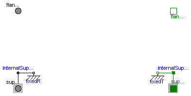
| Type | Name | Default | Description |
|---|---|---|---|
| Boolean | useSupportR | false | = true, if rotational support flange enabled, otherwise implicitly grounded |
| Boolean | useSupportT | false | = true, if translational support flange enabled, otherwise implicitly grounded |
| Real | ratio | Transmission ratio (flange_a.phi/flange_b.s) [rad/m] |
| Type | Name | Description |
|---|---|---|
| Flange_a | flangeR | Flange of rotational shaft |
| Flange_b | flangeT | Flange of translational rod |
| Support | supportR | Rotational support/housing of component |
| Support | supportT | Translational support/housing of component |
model IdealGearR2T "Gearbox transforming rotational into translational motion\"" extends Modelica.Mechanics.Rotational.Components.IdealGearR2T; equation end IdealGearR2T;
| Type | Name | Default | Description |
|---|---|---|---|
| Boolean | useSupportR | false | = true, if rotational support flange enabled, otherwise implicitly grounded |
| Boolean | useSupportT | false | = true, if translational support flange enabled, otherwise implicitly grounded |
| Distance | radius | Wheel radius [m] |
| Type | Name | Description |
|---|---|---|
| Flange_a | flangeR | Flange of rotational shaft |
| Flange_b | flangeT | Flange of translational rod |
| Support | supportR | Rotational support/housing of component |
| Support | supportT | Translational support/housing of component |
model IdealRollingWheel "Simple 1-dim. model of an ideal rolling wheel without inertia" extends Modelica.Mechanics.Rotational.Components.IdealRollingWheel; equation end IdealRollingWheel;
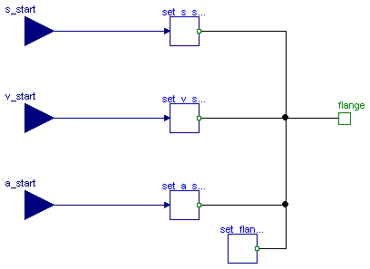
This component is used to optionally initialize the position, speed, and/or acceleration of the flange to which this component is connected. Via parameters use_s_start, use_v_start, use_a_start the corresponding input signals s_start, v_start, a_start are conditionally activated. If an input is activated, the corresponding flange property is initialized with the input value at start time.
For example, if "use_s_start = true", then flange.s is initialized with the value of the input signal "s_start" at the start time.
Additionally, it is optionally possible to define the "StateSelect" attribute of the flange position and the flange speed via paramater "stateSelection".
This component is especially useful when the initial values of a flange shall be set according to reference signals of a controller that are provided via a signal bus.
| Type | Name | Default | Description |
|---|---|---|---|
| Boolean | use_s_start | true | = true, if initial position is defined by input s_start, otherwise not initialized |
| Boolean | use_v_start | true | = true, if initial speed is defined by input v_start, otherwise not initialized |
| Boolean | use_a_start | true | = true, if initial acceleration is defined by input a_start, otherwise not initialized |
| StateSelect | stateSelect | StateSelect.default | Priority to use flange angle and speed as states |
| Type | Name | Description |
|---|---|---|
| input RealInput | s_start | Initial position of flange |
| input RealInput | v_start | Initial speed of flange |
| input RealInput | a_start | Initial angular acceleration of flange |
| Flange_b | flange | Flange that is initialized |
model InitializeFlange
"Initializes a flange with pre-defined position, speed and acceleration (usually, this is reference data from a control bus)"
import Modelica.Blocks.Types.StateSelection;
extends Modelica.Blocks.Interfaces.BlockIcon;
parameter Boolean use_s_start = true
"= true, if initial position is defined by input s_start, otherwise not initialized";
parameter Boolean use_v_start = true
"= true, if initial speed is defined by input v_start, otherwise not initialized";
parameter Boolean use_a_start = true
"= true, if initial acceleration is defined by input a_start, otherwise not initialized";
parameter StateSelect stateSelect=StateSelect.default
"Priority to use flange angle and speed as states";
Modelica.Blocks.Interfaces.RealInput s_start if use_s_start
"Initial position of flange";
Modelica.Blocks.Interfaces.RealInput v_start if use_v_start
"Initial speed of flange";
Modelica.Blocks.Interfaces.RealInput a_start if use_a_start
"Initial angular acceleration of flange";
Interfaces.Flange_b flange "Flange that is initialized";
Modelica.SIunits.Position s_flange(stateSelect=stateSelect)=flange.s
"Flange position";
Modelica.SIunits.Velocity v_flange(stateSelect=stateSelect)= der(s_flange)
"= der(s_flange)";
protected
encapsulated model Set_s_start "Set s_start"
import Modelica;
extends Modelica.Blocks.Interfaces.BlockIcon;
Modelica.Blocks.Interfaces.RealInput s_start "Start position";
Modelica.Mechanics.Translational.Interfaces.Flange_b flange;
initial equation
flange.s = s_start;
equation
flange.f = 0;
end Set_s_start;
encapsulated model Set_v_start "Set v_start"
import Modelica;
extends Modelica.Blocks.Interfaces.BlockIcon;
Modelica.Blocks.Interfaces.RealInput v_start "Start velocity";
Modelica.Mechanics.Translational.Interfaces.Flange_b flange;
initial equation
der(flange.s) = v_start;
equation
flange.f = 0;
end Set_v_start;
encapsulated model Set_a_start "Set a_start"
import Modelica;
extends Modelica.Blocks.Interfaces.BlockIcon;
Modelica.Blocks.Interfaces.RealInput a_start "Start acceleration";
Modelica.Mechanics.Translational.Interfaces.Flange_b flange(s(stateSelect=StateSelect.avoid));
Modelica.SIunits.Velocity v = der(flange.s);
initial equation
der(v) = a_start;
equation
flange.f = 0;
end Set_a_start;
encapsulated model Set_flange_f "Set flange_f to zero"
import Modelica;
extends Modelica.Blocks.Interfaces.BlockIcon;
Modelica.Mechanics.Translational.Interfaces.Flange_b flange;
equation
flange.f = 0;
end Set_flange_f;
protected
Set_s_start set_s_start if use_s_start;
Set_v_start set_v_start if use_v_start;
Set_a_start set_a_start if use_a_start;
Set_flange_f set_flange_f;
equation
connect(set_s_start.flange, flange);
connect(set_v_start.flange, flange);
connect(set_a_start.flange, flange);
connect(set_flange_f.flange, flange);
connect(s_start, set_s_start.s_start);
connect(v_start, set_v_start.v_start);
connect(a_start, set_a_start.a_start);
end InitializeFlange;
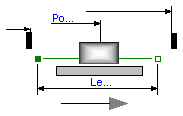
This element describes the Stribeck friction characteristics of a sliding mass,
i. e. the frictional force acting between the sliding mass and the support. Included is a
hard stop for the position.
The surface is fixed and there is friction between sliding mass and surface.
The frictional force f is given for positive velocity v by:

There are hard stops at smax and smin, i. e. if
flange_a.s >= smin
the sliding mass can move freely. and
flange_b.s <= xmax
When the absolute velocity becomes zero, the sliding mass becomes stuck, i.e., the absolute position remains constant. In this phase the friction force is calculated from a force balance due to the requirement that the absolute acceleration shall be zero. The elements begin to slide when the friction force exceeds a threshold value, called the maximum static friction force, computed via:
For more details of the used friction model see the following reference:
Beater P. (1999):
The friction model is implemented in a "clean" way by state events and leads to continuous/discrete systems of equations which have to be solved by appropriate numerical methods. The method is described in:
More precise friction models take into account the elasticity of the material when the two elements are "stuck", as well as other effects, like hysteresis. This has the advantage that the friction element can be completely described by a differential equation without events. The drawback is that the system becomes stiff (about 10-20 times slower simulation) and that more material constants have to be supplied which requires more sophisticated identification. For more details, see the following references, especially (Armstrong and Canudas de Witt 1996):
| Type | Name | Default | Description |
|---|---|---|---|
| Position | smax | Right stop for (right end of) sliding mass [m] | |
| Position | smin | Left stop for (left end of) sliding mass [m] | |
| Length | L | Length of component, from left flange to right flange (= flange_b.s - flange_a.s) [m] | |
| Mass | m | mass [kg] | |
| Real | F_prop | Velocity dependent friction [N.s/m] | |
| Force | F_Coulomb | Constant friction: Coulomb force [N] | |
| Force | F_Stribeck | Stribeck effect [N] | |
| Real | fexp | Exponential decay [s/m] | |
| Initialization | |||
| Boolean | startForward.start | false | = true, if v_rel=0 and start of forward sliding or v_rel > v_small |
| Boolean | startBackward.start | false | = true, if v_rel=0 and start of backward sliding or v_rel < -v_small |
| Boolean | locked.start | false | true, if v_rel=0 and not sliding |
| Position | s.start | 0 | Absolute position of center of component (s = flange_a.s + L/2 = flange_b.s - L/2) [m] |
| Advanced | |||
| Velocity | v_small | 1e-3 | Relative velocity near to zero (see model info text) [m/s] |
| Type | Name | Description |
|---|---|---|
| Flange_a | flange_a | Left flange of translational component |
| Flange_b | flange_b | Right flange of translational component |
model MassWithStopAndFriction
"Sliding mass with hard stop and Stribeck friction"
extends PartialFrictionWithStop;
SI.Velocity v(start=0, stateSelect = StateSelect.always)
"Absolute velocity of flange_a and flange_b";
SI.Acceleration a(start=0) "Absolute acceleration of flange_a and flange_b";
parameter Modelica.SIunits.Mass m(start=1) "mass";
parameter Real F_prop(final unit="N.s/m", final min=0, start = 1)
"Velocity dependent friction";
parameter Modelica.SIunits.Force F_Coulomb(start=5)
"Constant friction: Coulomb force";
parameter Modelica.SIunits.Force F_Stribeck(start=10) "Stribeck effect";
parameter Real fexp(final unit="s/m", final min=0, start = 2)
"Exponential decay";
encapsulated partial model PartialFrictionWithStop
"Base model of Coulomb friction elements with stop"
import SI = Modelica.SIunits;
import Modelica.Mechanics.Translational.Interfaces.PartialRigid;
parameter SI.Position smax(start= 25)
"Right stop for (right end of) sliding mass";
parameter SI.Position smin(start=-25)
"Left stop for (left end of) sliding mass";
parameter SI.Velocity v_small=1e-3
"Relative velocity near to zero (see model info text)";
// Equations to define the following variables have to be defined in subclasses
SI.Velocity v_relfric "Relative velocity between frictional surfaces";
SI.Acceleration a_relfric "Relative acceleration between frictional surfaces";
SI.Force f
"Friction force (positive, if directed in opposite direction of v_rel)";
SI.Force f0 "Friction force for v=0 and forward sliding";
SI.Force f0_max "Maximum friction force for v=0 and locked";
Boolean free "true, if frictional element is not active";
// Equations to define the following variables are given in this class
Real sa(unit="1")
"Path parameter of friction characteristic f = f(a_relfric)";
Boolean startForward(start=false, fixed=true)
"= true, if v_rel=0 and start of forward sliding or v_rel > v_small";
Boolean startBackward(start=false, fixed=true)
"= true, if v_rel=0 and start of backward sliding or v_rel < -v_small";
Boolean locked(start=false) "true, if v_rel=0 and not sliding";
extends PartialRigid(s(start=0, stateSelect = StateSelect.always));
constant Integer Unknown=3 "Value of mode is not known";
constant Integer Free=2 "Element is not active";
constant Integer Forward=1 "v_rel > 0 (forward sliding)";
constant Integer Stuck=0
"v_rel = 0 (forward sliding, locked or backward sliding)";
constant Integer Backward=-1 "v_rel < 0 (backward sliding)";
Integer mode(
final min=Backward,
final max=Unknown,
start=Unknown, fixed=true);
protected
constant SI.Acceleration unitAcceleration = 1;
constant SI.Force unitForce = 1;
equation
/* Friction characteristic
(locked is introduced to help the Modelica translator determining
the different structural configurations,
if for each configuration special code shall be generated)
*/
startForward = pre(mode) == Stuck and
(pre(startForward) or sa > f0_max/unitForce and sa > f0/unitForce and s < (smax - L/2)) or
pre(mode) == Backward and v_relfric > v_small or initial() and v_relfric > 0;
startBackward = pre(mode) == Stuck and
(pre(startBackward) or sa < -f0_max/unitForce and sa < -f0/unitForce and s > (smin + L/2)) or
pre(mode) == Forward and v_relfric < -v_small or initial() and v_relfric < 0;
locked = not free and
not (pre(mode) == Forward or startForward or pre(mode) == Backward or startBackward);
a_relfric/unitAcceleration = if locked then 0 else
if free then sa else
if startForward then sa - f0/unitForce else
if startBackward then sa + f0/unitForce else
if pre(mode) == Forward then sa - f0/unitForce else
sa + f0/unitForce;
/* Friction torque has to be defined in a subclass. Example for a clutch:
f = if locked then sa else
if free then 0 else
cgeo*fn*(if startForward then Math.tempInterpol1( v_relfric, mue_pos, 2) else
if startBackward then -Math.tempInterpol1(-v_relfric, mue_pos, 2) else
if pre(mode) == Forward then Math.tempInterpol1( v_relfric, mue_pos, 2) else
-Math.tempInterpol1(-v_relfric, mue_pos, 2));
*/
// finite state machine to determine configuration
mode = if free then Free else
(if (pre(mode) == Forward or pre(mode) == Free or startForward) and v_relfric > 0 and s < (smax - L/2) then
Forward else
if (pre(mode) == Backward or pre(mode) == Free or startBackward) and v_relfric < 0 and s > (smin + L/2) then
Backward else
Stuck);
end PartialFrictionWithStop;
equation
// Constant auxiliary variables
f0 = (F_Coulomb + F_Stribeck);
f0_max = f0*1.001;
free = f0 <= 0 and F_prop <= 0 and s > smin + L/2 and s < smax - L/2;
// Velocity and acceleration of flanges
v = der(s);
a = der(v);
v_relfric = v;
a_relfric = a;
// Equilibrium of forces
0 = flange_a.f + flange_b.f - f - m*der(v);
// Friction force
f = if locked then sa*unitForce else
if free then 0 else
(if startForward then F_prop*v + F_Coulomb + F_Stribeck else
if startBackward then F_prop*v - F_Coulomb - F_Stribeck else
if pre(mode) == Forward then F_prop*v + F_Coulomb + F_Stribeck*exp(-fexp*abs(v)) else
F_prop*v - F_Coulomb - F_Stribeck*exp(-fexp*abs(v)));
// Define events for hard stops and reinitiliaze the state variables velocity v and position s
algorithm
when (initial()) then
assert(s > smin + L/2 or s >= smin + L/2 and v >= 0,
"Error in initialization of hard stop. (s - L/2) must be >= smin ");
assert(s < smax - L/2 or s <= smax - L/2 and v <= 0,
"Error in initialization of hard stop. (s + L/2) must be <= smax ");
end when;
when not (s < smax - L/2) then
reinit(s, smax - L/2);
if (not initial() or v>0) then
reinit(v, 0);
end if;
end when;
when not (s > smin + L/2) then
reinit(s, smin + L/2);
if (not initial() or v<0) then
reinit(v, 0);
end if;
end when;
end MassWithStopAndFriction;
 Modelica.Mechanics.Translational.Components.RelativeStates
Modelica.Mechanics.Translational.Components.RelativeStates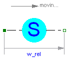
Usually, the absolute position and the absolute velocity of Modelica.Mechanics.Translational.Inertia models are used as state variables. In some circumstances, relative quantities are better suited, e.g., because it may be easier to supply initial values. In such cases, model RelativeStates allows the definition of state variables in the following way:
An example is given in the next figure

Here, the relative position and the relative velocity between the two masses are used as state variables. Additionally, the simulator selects either the absolute position and absolute velocity of model mass1 or of model mass2 as state variables.
| Type | Name | Default | Description |
|---|---|---|---|
| StateSelect | stateSelect | StateSelect.prefer | Priority to use the relative angle and relative speed as states |
| Type | Name | Description |
|---|---|---|
| Flange_a | flange_a | (left) driving flange (flange axis directed in to cut plane, e. g. from left to right) |
| Flange_b | flange_b | (right) driven flange (flange axis directed out of cut plane) |
model RelativeStates "Definition of relative state variables"
extends Translational.Interfaces.PartialTwoFlanges;
parameter StateSelect stateSelect=StateSelect.prefer
"Priority to use the relative angle and relative speed as states";
SI.Position s_rel(start=0, stateSelect=StateSelect.prefer)
"relative position used as state variable";
SI.Velocity v_rel(start=0, stateSelect=StateSelect.prefer)
"relative velocity used as state variable";
SI.Acceleration a_rel(start=0) "relative angular acceleration";
equation
s_rel = flange_b.s - flange_a.s;
v_rel = der(s_rel);
a_rel = der(v_rel);
flange_a.f = 0;
flange_b.f = 0;
end RelativeStates;
encapsulated model Set_s_start "Set s_start" import Modelica; extends Modelica.Blocks.Interfaces.BlockIcon; Modelica.Blocks.Interfaces.RealInput s_start "Start position"; Modelica.Mechanics.Translational.Interfaces.Flange_b flange; initial equation flange.s = s_start; equation flange.f = 0; end Set_s_start;
encapsulated model Set_v_start "Set v_start" import Modelica; extends Modelica.Blocks.Interfaces.BlockIcon; Modelica.Blocks.Interfaces.RealInput v_start "Start velocity"; Modelica.Mechanics.Translational.Interfaces.Flange_b flange; initial equation der(flange.s) = v_start; equation flange.f = 0; end Set_v_start;
encapsulated model Set_a_start "Set a_start" import Modelica; extends Modelica.Blocks.Interfaces.BlockIcon; Modelica.Blocks.Interfaces.RealInput a_start "Start acceleration"; Modelica.Mechanics.Translational.Interfaces.Flange_b flange(s(stateSelect=StateSelect.avoid)); Modelica.SIunits.Velocity v = der(flange.s); initial equation der(v) = a_start; equation flange.f = 0; end Set_a_start;
encapsulated model Set_flange_f "Set flange_f to zero" import Modelica; extends Modelica.Blocks.Interfaces.BlockIcon; Modelica.Mechanics.Translational.Interfaces.Flange_b flange; equation flange.f = 0; end Set_flange_f;
Basic model for Coulomb friction that models the stuck phase in a reliable way.
Additionally, a left and right stop are handled.
| Type | Name | Default | Description |
|---|---|---|---|
| Position | smax | Right stop for (right end of) sliding mass [m] | |
| Position | smin | Left stop for (left end of) sliding mass [m] | |
| Length | L | Length of component, from left flange to right flange (= flange_b.s - flange_a.s) [m] | |
| Advanced | |||
| Velocity | v_small | 1e-3 | Relative velocity near to zero (see model info text) [m/s] |
| Type | Name | Description |
|---|---|---|
| Flange_a | flange_a | Left flange of translational component |
| Flange_b | flange_b | Right flange of translational component |
encapsulated partial model PartialFrictionWithStop
"Base model of Coulomb friction elements with stop"
import SI = Modelica.SIunits;
import Modelica.Mechanics.Translational.Interfaces.PartialRigid;
parameter SI.Position smax(start= 25)
"Right stop for (right end of) sliding mass";
parameter SI.Position smin(start=-25)
"Left stop for (left end of) sliding mass";
parameter SI.Velocity v_small=1e-3
"Relative velocity near to zero (see model info text)";
// Equations to define the following variables have to be defined in subclasses
SI.Velocity v_relfric "Relative velocity between frictional surfaces";
SI.Acceleration a_relfric "Relative acceleration between frictional surfaces";
SI.Force f
"Friction force (positive, if directed in opposite direction of v_rel)";
SI.Force f0 "Friction force for v=0 and forward sliding";
SI.Force f0_max "Maximum friction force for v=0 and locked";
Boolean free "true, if frictional element is not active";
// Equations to define the following variables are given in this class
Real sa(unit="1")
"Path parameter of friction characteristic f = f(a_relfric)";
Boolean startForward(start=false, fixed=true)
"= true, if v_rel=0 and start of forward sliding or v_rel > v_small";
Boolean startBackward(start=false, fixed=true)
"= true, if v_rel=0 and start of backward sliding or v_rel < -v_small";
Boolean locked(start=false) "true, if v_rel=0 and not sliding";
extends PartialRigid(s(start=0, stateSelect = StateSelect.always));
constant Integer Unknown=3 "Value of mode is not known";
constant Integer Free=2 "Element is not active";
constant Integer Forward=1 "v_rel > 0 (forward sliding)";
constant Integer Stuck=0
"v_rel = 0 (forward sliding, locked or backward sliding)";
constant Integer Backward=-1 "v_rel < 0 (backward sliding)";
Integer mode(
final min=Backward,
final max=Unknown,
start=Unknown, fixed=true);
protected
constant SI.Acceleration unitAcceleration = 1;
constant SI.Force unitForce = 1;
equation
/* Friction characteristic
(locked is introduced to help the Modelica translator determining
the different structural configurations,
if for each configuration special code shall be generated)
*/
startForward = pre(mode) == Stuck and
(pre(startForward) or sa > f0_max/unitForce and sa > f0/unitForce and s < (smax - L/2)) or
pre(mode) == Backward and v_relfric > v_small or initial() and v_relfric > 0;
startBackward = pre(mode) == Stuck and
(pre(startBackward) or sa < -f0_max/unitForce and sa < -f0/unitForce and s > (smin + L/2)) or
pre(mode) == Forward and v_relfric < -v_small or initial() and v_relfric < 0;
locked = not free and
not (pre(mode) == Forward or startForward or pre(mode) == Backward or startBackward);
a_relfric/unitAcceleration = if locked then 0 else
if free then sa else
if startForward then sa - f0/unitForce else
if startBackward then sa + f0/unitForce else
if pre(mode) == Forward then sa - f0/unitForce else
sa + f0/unitForce;
/* Friction torque has to be defined in a subclass. Example for a clutch:
f = if locked then sa else
if free then 0 else
cgeo*fn*(if startForward then Math.tempInterpol1( v_relfric, mue_pos, 2) else
if startBackward then -Math.tempInterpol1(-v_relfric, mue_pos, 2) else
if pre(mode) == Forward then Math.tempInterpol1( v_relfric, mue_pos, 2) else
-Math.tempInterpol1(-v_relfric, mue_pos, 2));
*/
// finite state machine to determine configuration
mode = if free then Free else
(if (pre(mode) == Forward or pre(mode) == Free or startForward) and v_relfric > 0 and s < (smax - L/2) then
Forward else
if (pre(mode) == Backward or pre(mode) == Free or startBackward) and v_relfric < 0 and s > (smin + L/2) then
Backward else
Stuck);
end PartialFrictionWithStop;